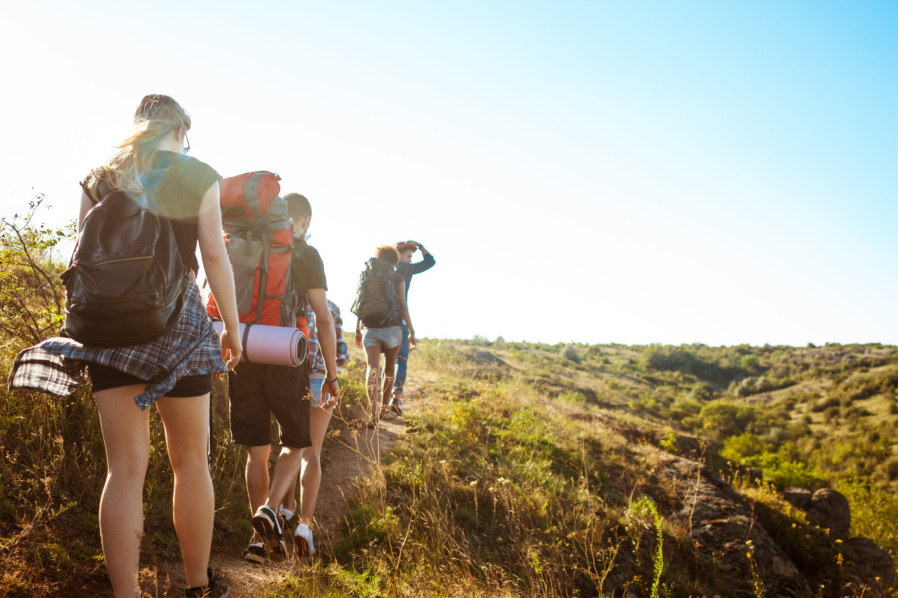
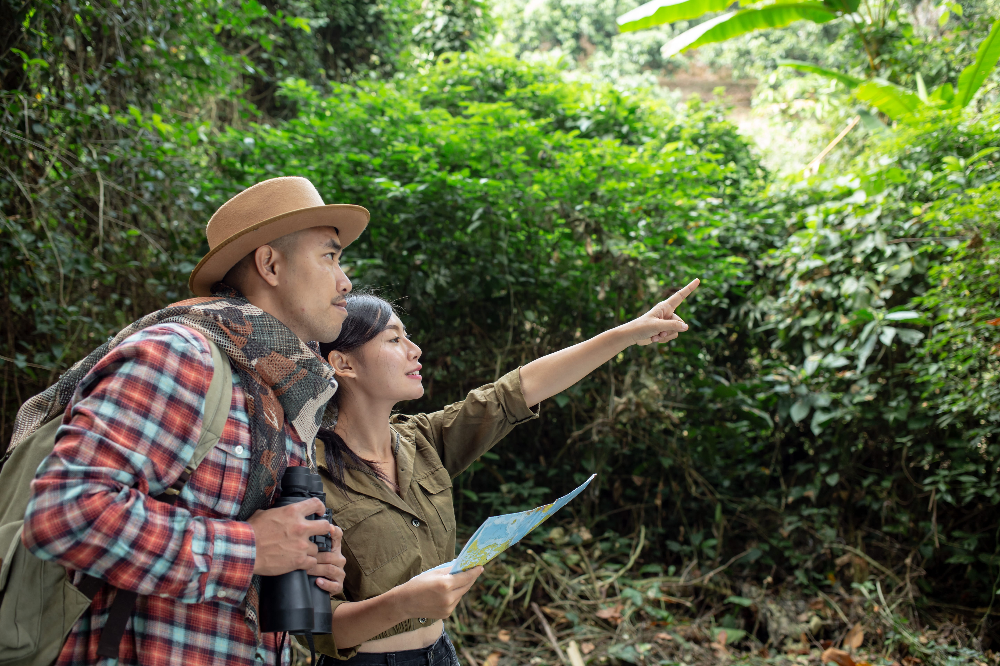

Senderismo interpretativo
Recorridos de 3 horas con guia local para observar flora, aves y nacientes protegidas.
ExplorarSan Gerardo de Dota, Costa Rica
Un refugio de montaña en la Cordillera de Talamanca, con energía limpia, cocina local y actividades de naturaleza de bajo impacto.
Operacion diaria con paneles solares y calentamiento termico para reducir consumo tradicional.
La cocina del hotel usa ingredientes de temporada cultivados en huertas de altura de la zona.
Separación de residuos, compostaje y reducción de plasticos de un solo uso en todas las areas.
Cada estancia apoya proyectos de reforestación comunitaria en la Cordillera de Talamanca.
Tarjetas informativas

Recorridos de 3 horas con guia local para observar flora, aves y nacientes protegidas.
Explorar
Clase culinaria con chef de temporada usando ingredientes cosechados en el mismo hotel.
Conocer programa
Visita técnica por sistemas solares, manejo de agua y política de compras verdes.
Ver detalles